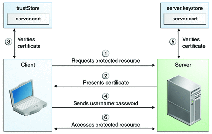

Authentication Mechanisms
This section discusses the client authentication and mutual authentication mechanisms.
Client Authentication
With client authentication, the web server authenticates the client by using the client’s public key certificate. Client authentication is a more secure method of authentication than either basic or form-based authentication. It uses HTTP over SSL (HTTPS), in which the server authenticates the client using the client’s public key certificate. SSL technology provides data encryption, server authentication, message integrity, and optional client authentication for a TCP/IP connection. You can think of a public key certificate as the digital equivalent of a passport. The certificate is issued by a trusted organization, a certificate authority (CA), and provides identification for the bearer.
Before using client authentication, make sure the client has a valid public key certificate. For more information on creating and using public key certificates, read Working with Digital Certificates.
The following example shows how to declare client authentication in your deployment descriptor:
<login-config>
<auth-method>CLIENT-CERT</auth-method>
</login-config>
Mutual Authentication
With mutual authentication, the server and the client authenticate each other. Mutual authentication is of two types:
Certificate-based (see Figure 42-1)
User name/password-based (see Figure 42-2)
When using certificate-based mutual authentication, the following actions occur.
A client requests access to a protected resource.
The web server presents its certificate to the client.
The client verifies the server’s certificate.
If successful, the client sends its certificate to the server.
The server verifies the client’s credentials.
If successful, the server grants access to the protected resource requested by the client.
Figure 42-1 shows what occurs during certificate-based mutual authentication.
Figure 42-1 Certificate-Based Mutual Authentication

In user name/password-based mutual authentication, the following actions occur.
A client requests access to a protected resource.
The web server presents its certificate to the client.
The client verifies the server’s certificate.
If successful, the client sends its user name and password to the server.
The server verifies the client’s credentials.
If the verification is successful, the server grants access to the protected resource requested by the client.
Figure 42-2 shows what occurs during user name/password-based mutual authentication.
Figure 42-2 User Name/Password-Based Mutual Authentication
Enabling Mutual Authentication over SSL
This section discusses setting up client-side authentication. Enabling both server-side and client-side authentication is called mutual, or two-way, authentication. In client authentication, clients are required to submit certificates issued by a certificate authority that you choose to accept.
There are at least two ways to enable mutual authentication over SSL:
The preferred method is to set the method of authentication in the web.xml application deployment descriptor to CLIENT-CERT. This enforces mutual authentication by modifying the deployment descriptor of the given application. In this way, client authentication is enabled only for a specific resource controlled by the security constraint, and the check is performed only when the application requires client authentication.
A less commonly used method is to set the clientAuth property in the certificate realm to true if you want the SSL stack to require a valid certificate chain from the client before accepting a connection. A false value (which is the default) will not require a certificate chain unless the client requests a resource protected by a security constraint that uses CLIENT-CERT authentication. When you enable client authentication by setting the clientAuth property to true, client authentication will be required for all the requests going through the specified SSL port. If you turn clientAuth on, it is on all of the time, which can severely degrade performance.
When client authentication is enabled in both of these ways, client authentication will be performed twice.
Creating a Client Certificate for Mutual Authentication
If you have a certificate signed by a trusted Certificate Authority (CA) such as Verisign, and the GlassFish Server cacerts.jks file already contains a certificate verified by that CA, you do not need to complete this step. You need to install your certificate in the GlassFish Server certificate file only when your certificate is self-signed.
From the directory where you want to create the client certificate, run keytool as outlined here. When you press Enter, keytool prompts you to enter the server name, organizational unit, organization, locality, state, and country code.
You must enter the server name in response to keytool’s first prompt, in which it asks for first and last names. For testing purposes, this can be localhost. The host specified in the keystore must match the host identified in the javee.server.host variable specified in your tut-install/examples/bp-project/build.properties file. If this example is to verify mutual authentication and you receive a runtime error stating that the HTTPS host name is wrong, re-create the client certificate, being sure to use the same host name you will use when running the example. For example, if your machine name is duke, then enter duke as the certificate CN or when prompted for first and last names. When accessing the application, enter a URL that points to the same location (for example, https://duke:8181/mutualauth/hello). This is necessary because during SSL handshake, the server verifies the client certificate by comparing the certificate name to the host name from which it originates.
To Create a Client Certificate and Keystore
To create a keystore named client_keystore.jks that contains a client certificate named client.cer, follow these steps.
- Create a backup copy of the server truststore file. To do this,
- Change to the directory containing the server’s keystore and truststore files, domain-dir\config.
- Copy cacerts.jks to cacerts.backup.jks.
- Copy keystore.jks to keystore.backup.jks.
Do not put client certificates in the cacerts.jks file. Any certificate you add to the cacerts file effectively can be a trusted root for any and all certificate chains. After you have completed development, delete the development version of the cacerts file and replace it with the original copy.
- Generate the client certificate. Enter the following command from the directory where you
want to generate the client certificate:
java-home\bin\keytool -genkey -alias client-alias -keyalg RSA -keypass changeit -storepass changeit -keystore client_keystore.jks
- Export the generated client certificate into the file client.cer:
java-home\bin\keytool -export -alias client-alias -storepass changeit -file client.cer -keystore client_keystore.jks
- Add the certificate to the truststore file domain-dir/config/cacerts.jks. Run keytool from the
directory where you created the keystore and client certificate. Use the following parameters:
java-home\bin\keytool -import -v -trustcacerts -alias client-alias -file client.cer -keystore domain-dir/config/cacerts.jks -keypass changeit -storepass changeit
The keytool utility returns a message like this one:
Owner: CN=localhost, OU=My Company, O=Software, L=Santa Clara, ST=CA, C=US Issuer: CN=localhost, OU=My Company, O=Software, L=Santa Clara, ST=CA, C=US Serial number: 3e39e66a Valid from: Tue Nov 27 12:22:47 EST 2012 until: Mon Feb 25 12:22:47 EST 2013 Certificate fingerprints: MD5: 5A:B0:4C:88:4E:F8:EF:E9:E5:8B:53:BD:D0:AA:8E:5A SHA1:90:00:36:5B:E0:A7:A2:BD:67:DB:EA:37:B9:61:3E:26:B3:89:46:32 Signature algorithm name: SHA1withRSA Version: 3 Trust this certificate? [no]: yes Certificate was added to keystore [Storing cacerts.jks] - Restart GlassFish Server.